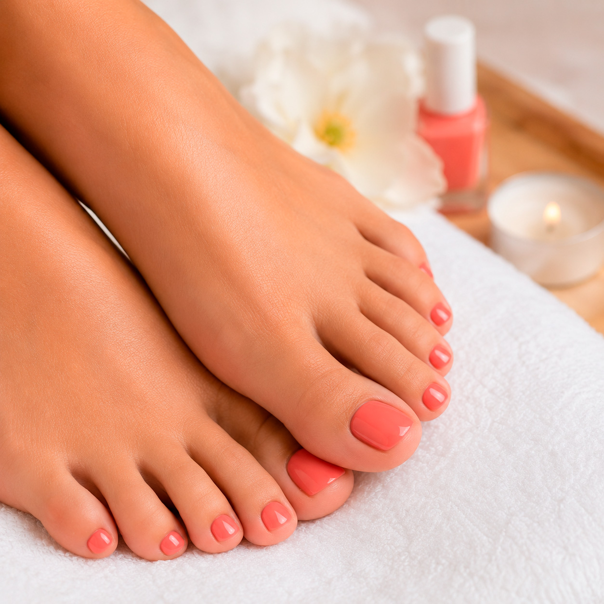
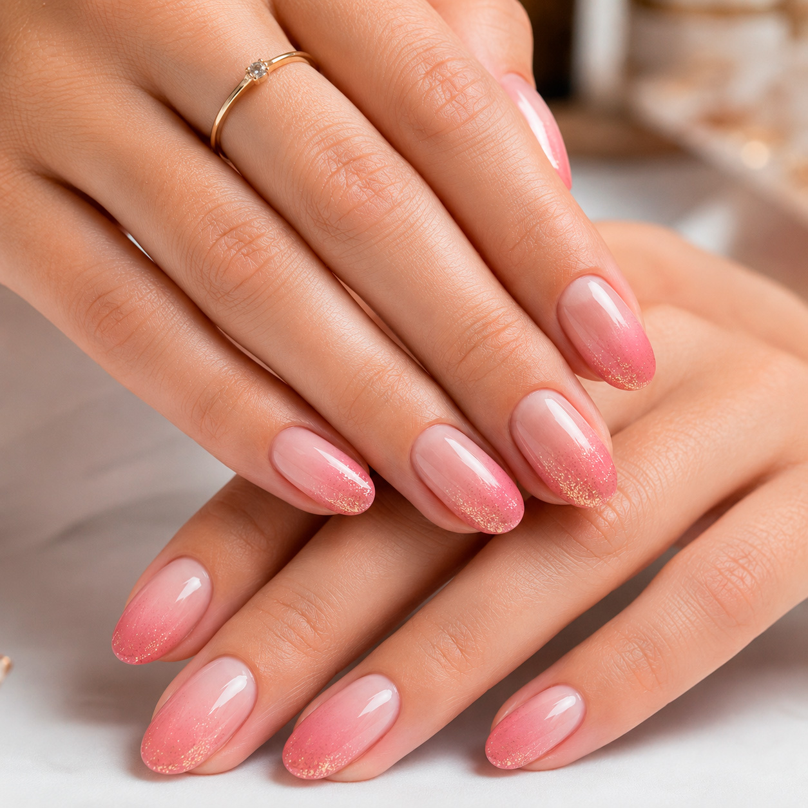
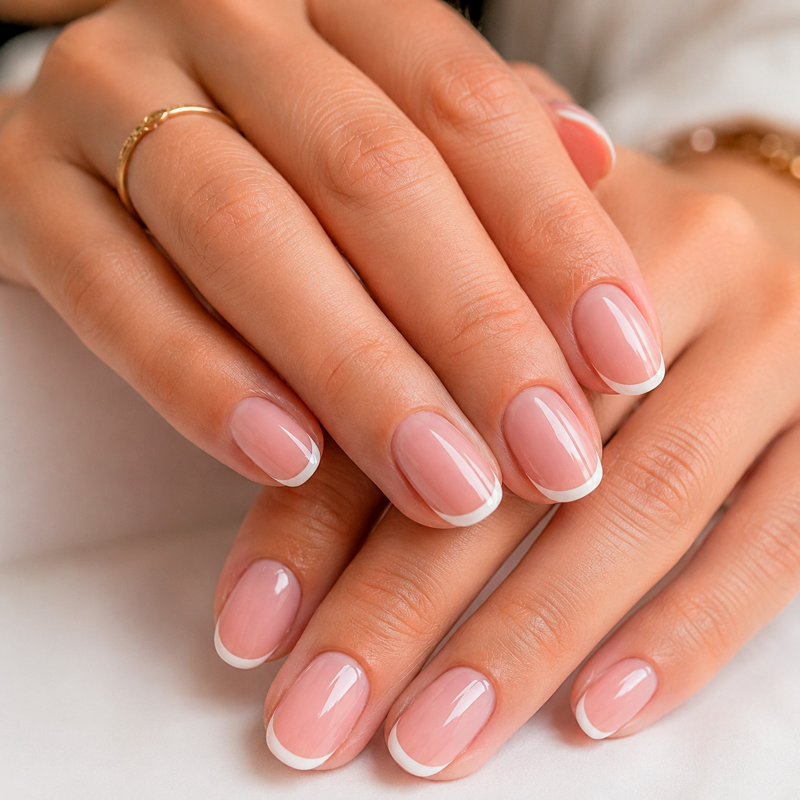

Manicura y pedicura en Arroyomolinos
Sin estropear tu uña natural y a un precio que no te va a doler. Aquí no hay prisas ni cadena de montaje: solo Mónica, tu cita y tus uñas bien cuidadas.
Te respondo yo misma · Sin compromiso · En 1 minuto tienes cita
Por qué este sitio es diferente
Te haces las uñas, te encantan… y a los cuatro días empiezan a saltarse. O sales de un centro donde te han colocado el servicio más caro sin preguntarte. O notas que, de tanto esmaltado, tu uña natural está cada vez más débil y fina.
Es lo que cuentan casi todas las mujeres que descubren a Mónica. Venían escarmentadas. Y se quedaron.
Quién te atiende
Soy quien va a atenderte de principio a fin. Aquí no te pasa de mano en mano nadie: la cita es tuya y te dedico el tiempo que necesites, sin reloj y sin prisa.
Trabajo con una idea muy sencilla: tu uña natural es lo primero. Por eso te aconsejo de verdad, aunque eso signifique recomendarte un servicio más sencillo o más barato del que venías a pedir. Lo que me interesa es que salgas con unas uñas preciosas y sanas, y que te duren tanto que vuelvas porque quieres, no porque se te han estropeado.
Llevo años haciéndolo en Arroyomolinos y la mayoría de mis clientas ya no se mueven de aquí. Eso, para mí, es el mejor piropo.
Reservar mi cita con MónicaPor qué tus uñas van a estar mejor aquí
Nada de dejarte la uña fina y debilitada. Trabajo con mimo y productos de calidad para que, manicura tras manicura, tus uñas estén más fuertes, no más castigadas.
«Intactas desde el primer día hasta el último.» Lo dicen mis clientas, incluso peluqueras que están todo el día con las manos en agua. Tres y cuatro semanas perfectas es lo normal.
Te digo lo que de verdad le conviene a tu uña y a tu bolsillo, no lo que más me conviene a mí. Si algo no te hace falta, te lo digo.
Buen trabajo no tiene por qué costar una fortuna. Sabes lo que pagas antes de sentarte, y siempre es honesto. Nada de precios desorbitados.
Algunos trabajos



Servicios y precios
Gran variedad de colores disponibles. ¿No sabes qué te conviene? Escríbeme y te aconsejo.
No te lo digo yo. Te lo dicen ellas.
Llegué con mis uñas fatal porque me las mordía y he vuelto a recuperarlas, están genial y súper fuertes. Intactas desde el primer día hasta el último. 100% recomendable.
Soy peluquera y nunca me habían durado tanto las uñas perfectas. El trato y el servicio, perfecto.
Trato inmejorable y técnica muy buena. El precio muy bueno, no como en otros centros con precios desorbitados. Se ha convertido en mi centro de referencia.
Te aconseja pensando en el bienestar de tus uñas y el esmaltado es súper duradero. Mi sitio de confianza sin ninguna duda.
Mis uñas son muy débiles para semipermanente, pero con el cuidado de Mónica noté la diferencia. Cuidando hasta el mínimo detalle.
Descubrí a Mónica cuando me mudé y desde entonces no he cambiado de sitio. Me duran muchísimo y la relación calidad-precio es genial.
¿Uñas débiles o te las muerdes?
Mujeres que se rinden con la uña natural y tiran de postizas, o que llevan años con la uña fina de tanto esmaltado mal hecho.
No hay magia: hay paciencia, técnica y cuidar la uña en cada cita. Cita tras cita, la uña se fortalece, crece sana y deja de romperse. Hay clientas que han pasado de morderse las uñas a lucirlas largas y naturales, sin extensiones.
Si es tu caso, cuéntamelo y vemos juntas por dónde empezar.
Dónde estamos
C. de Peñíscola, 30 — 28939 Arroyomolinos (Madrid).
Un espacio acogedor, tranquilo y limpio, pensado para que desconectes un rato mientras cuido de tus uñas.
Preguntas frecuentes
No si está bien hecha y bien retirada, que es justo lo que cuido aquí. Trabajo siempre pensando en la salud de tu uña natural; muchas clientas notan que la tienen más fuerte desde que vienen.
Lo normal son tres o cuatro semanas perfectas. Depende de tu uña y de tu día a día, pero la durabilidad es justo lo que más valoran mis clientas.
Desde 9,50 €. Tienes todos los precios en la sección de servicios, sin sorpresas.
Mejor con cita, así te dedico todo el tiempo sin prisas. Puedes reservar por WhatsApp, por teléfono o en Booksy en un minuto.
Escríbeme y te aconsejo. Para eso estoy: te digo lo que de verdad le conviene a tu uña.
Sí: francesa, ombré, stamping y decoración a tu gusto, con un montón de colores para elegir.
Reserva tu cita con Mónica y comprueba por qué más de 125 clientas no se mueven de aquí. Sin prisas, sin sustos en el precio y con unas uñas que te van a durar.
Pedir cita por WhatsApp